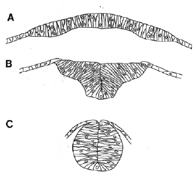

Modified from: Kimmel et al., 1955. Developmental Dynamics 203:253-310. Copyright © 1995 Wiley-Liss, Inc. Reprinted only by permission of Wiley-Liss, a subsidiary of John Wiley & Sons, Inc.
Fig. 22. Early morphogenesis of the neural primordium. Diagramatic transverse sections, redrawn from Papan and Campos-Ortega (1994). The neural plate (A, ca. 10 h) develops into the neural keel (B, ca. 13 h) by infolding at the midline. The keel in turn rounds into the cylindrical neural rod (C, ca. 16 h).

Figure 22